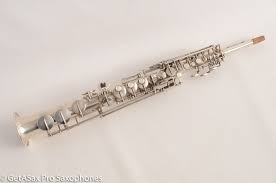
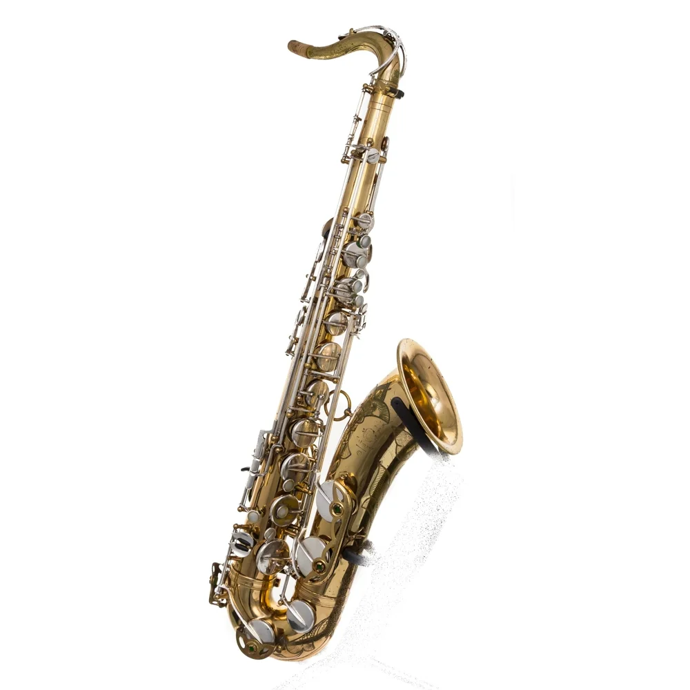
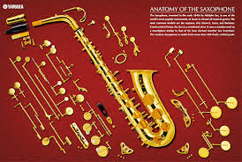

BARITONOS!!!
.jpg)
.jpg)
.jpg)

Saxofón ideal tanto para estudiantes como músicos intermedios que buscan un instrumento confiable y con excelente sonido. Fabricado con materiales de calidad, ofrece una afinación precisa y una respuesta cómoda en todo el registro. Su diseño ergonómico facilita la ejecución, permitiendo largas sesiones de práctica sin incomodidad. Incluye estuche protector para su transporte y cuidado. Perfecto para estudiar, tocar en banda o comenzar a desarrollar tu sonido con un instrumento versátil y duradero.

Saxofón ideal tanto para estudiantes como músicos intermedios que buscan un instrumento confiable y con excelente sonido. Fabricado con materiales de calidad, ofrece una afinación precisa y una respuesta cómoda en todo el registro. Su diseño ergonómico facilita la ejecución, permitiendo largas sesiones de práctica sin incomodidad. Incluye estuche protector para su transporte y cuidado. Perfecto para estudiar, tocar en banda o comenzar a desarrollar tu sonido con un instrumento versátil y duradero.
La Jazz at Lincoln Center Orchestra es una big band y orquesta de jazz estadounidense dirigida por Wynton Marsalis desde 1991. La orquesta es parte del Jazz at Lincoln Center, una organización de artes escénicas de la ciudad de Nueva York.
